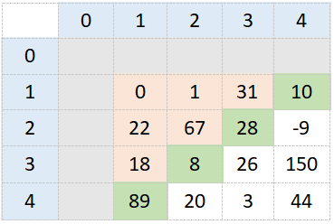

Acestea se remarcă prin faptul că au un număr inegal de linii şi coloane, deci dacă matricea ar avea n linii şi m coloane, atunci n!=m.
Acestea au număr egal de linii şi coloane, deci m=n.
Exemple:
Indexare de la 0
Această matrice conţine 3 linii şi 3 coloane.
Într-o matrice pătratică se remarcă o categorie specială de elemente, diagonalele.
Indexare de la 1
Şi această matrice conţine 3 linii şi 3 coloane
Elementele de pe diagonale sau în zonele delimitate de diagonale respectă anumite reguli care ţin de indici.
Diagonala principală
Indexare de la 0
i=j
Indexare de la 1
i=j
Parcurgerea diagonalei principale:
Diagonala secundară
Indexare de la 0
i+j=n-1
Indexare de la 1
i+j=n+1
Parcugerea diagonalei secundare:
Dacă n este impar, cele două diagonale au un element comun. Dacă n este par, cele două diagonale nu au elemente comune.
Deasupra diagonalei principale
Indexare de la 0
Indexare de la 1
În acest caz, i este mai mic ca j.
Sub diagonala principală
Indexare de la 0
Indexare de la 1
În acest caz, i este mai mare ca j.
Deasupra diagonalei secundare
Indexare de la 0
În acest caz, i+j este mai mic ca n-1.
Indexare de la 1
În acest caz, i+j este mai mic ca n+1.
Sub diagonala secundară
Indexare de la 0
În acest caz, i+j este mai mare ca n-1.
Indexare de la 1
În acest caz, i+j este mai mare ca n+1.
Diagonalele delimitează în matrice 4 zone: est, vest, nord,sud. Acestea sunt reprezentate astfel:
Tablourile bidimensionale, matricile, pot fi de două feluri: